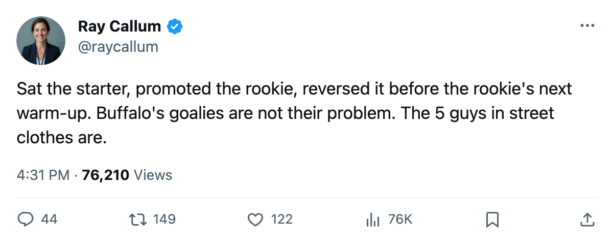

BUF
BUFGoalie Watch: Buffalo Reverses Course 2 Days After Sitting Biron
The coach put Miller in G1 on 2005-12-24. By 2005-12-26, Biron was back. The Sabres are 5 points out of a playoff spot with 48 games left.
 Ray CallumSenior correspondent · Home Ice Network
Ray CallumSenior correspondent · Home Ice NetworkThis desk wrote on 2005-12-24 that Lindy Ruff sat  Martin Biron85 after 25 starts and put
Martin Biron85 after 25 starts and put  Ryan Miller78 in. The lineup says that was true at the snapshot: Miller carried the G1 tag, Biron was not dressed. Four days later, Biron is G1 again. Miller is G2. The reversal happened between Christmas Eve and a 3-2 overtime win at Ottawa on 2005-12-26.
Ryan Miller78 in. The lineup says that was true at the snapshot: Miller carried the G1 tag, Biron was not dressed. Four days later, Biron is G1 again. Miller is G2. The reversal happened between Christmas Eve and a 3-2 overtime win at Ottawa on 2005-12-26.
Miller has 7 starts this season. Biron has 26.
What the coach walked back
Buffalo is 10-15-2, 36 points, 11th in the East. Eight is Carolina at 41 points. The gap is 5 with 48 games remaining. Not hopeless, but no room for a 4-game losing streak, and the Sabres were on one before the Ottawa result.
Their last 10 reads WLWWLLWWWW, newest first. Two wins and two losses before the OT win: .500 hockey heading into the break. Goaltending was part of the problem, not all of it. The change lasted one dressing-room cycle.
Biron will start in Washington on 2005-12-30 against a Capitals club carrying 26 points and a 2-game losing streak. It is the easiest matchup left before New Year's. Miller, if he plays, is a backup in a game the Sabres are expected to win.
The injuries at Buffalo are the bigger issue: 21 spells, 188 days lost. Hartnell (groin, out through 2006-01-07), Kotalik (hand, out through 2006-01-30), Laukkanen (shoulder, out through 2006-01-29). A forward and a defenseman on the top pairs. Ruff has shuffled his defensemen twice since 2005-12-24: Laukkanen out, Wallin in, Bombardir moved to a second pair, Zhitnik sliding from right to left.
The goalie change made the paper. The 5 men Ruff has not been able to keep healthy are why the Sabres are 5 points out.
